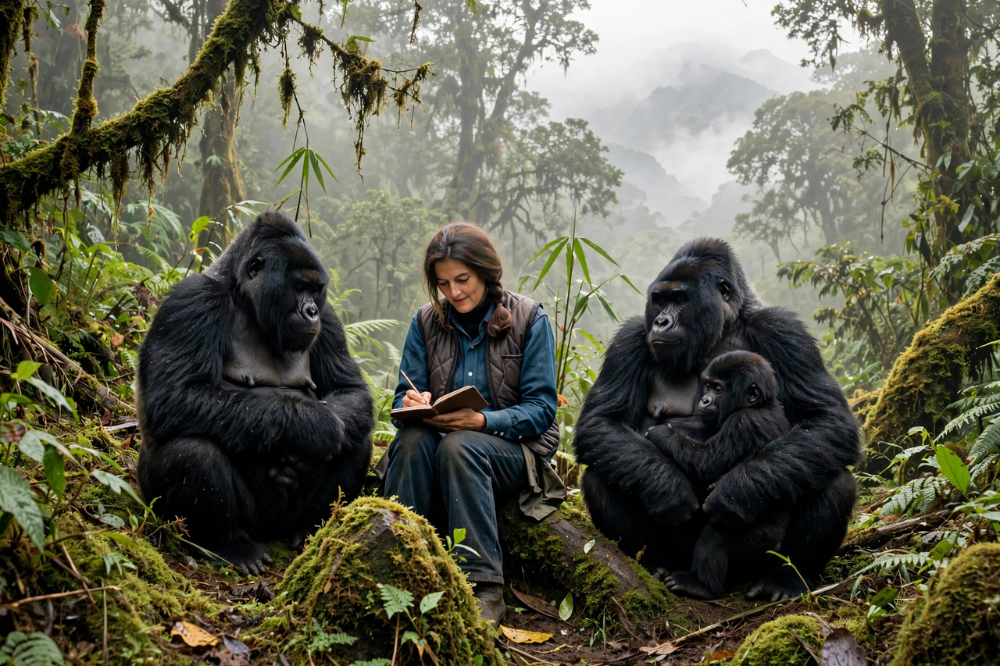

| Dian Fossey | |
|---|---|
 Fossey with mountain gorillas, Virunga Mountains | |
| Born | 16 January 1932, San Francisco, California, U.S. |
| Died | 26 December 1985 (aged 53), Virunga Mountains, Ruhengeri Province, Rwanda |
| Known for | Study and conservation of mountain gorillas |
| Education | San Jose State College (BA); University of Cambridge (PhD) |
| Fields | Primatology, ethology, conservation |
| Institutions | Karisoke Research Center |
Dian Fossey (16 January 1932 – 26 December 1985) was an American primatologist and conservationist known for undertaking an extensive study of mountain gorilla groups in the mountain forests of Rwanda over a period of 18 years. She was murdered in her cabin at her remote research camp in 1985, a case that remains officially unsolved, and is buried beside the gorillas she worked to protect.
Along with Jane Goodall and Biruté Galdikas, Fossey was one of the "Trimates" (sometimes called "Leakey's Angels") — the three women chosen by anthropologist Louis Leakey to conduct long-term field studies of, respectively, chimpanzees, gorillas and orangutans.
Fossey was born in San Francisco, the daughter of Kathryn "Kitty" Price and George Edward Fossey III, a real estate agent. After her parents' divorce and her father's later death, she was raised by her mother and stepfather. She studied occupational therapy at San Jose State College, graduating in 1954, and worked as an occupational therapist at the Kosair Children's Hospital in Louisville, Kentucky.
A first trip to Africa in 1963, financed by a bank loan, convinced her of her vocation. She met Louis Leakey in 1966 and accepted his offer to undertake a long-term study of the endangered mountain gorillas of the Virunga Mountains, following the earlier work of George Schaller.
Fossey arrived in Rwanda in 1967 and founded the Karisoke Research Center in Volcanoes National Park, between Mount Karisimbi and Mount Bisoke — the name "Karisoke" combines the two peaks. Living in near-isolation, she pioneered techniques of habituating gorilla groups to human presence, imitating their vocalisations and feeding behaviour to gain acceptance.
Her research documented the gorillas' social structure, vocal repertoire, diet and gentle nature. She also became an uncompromising opponent of poaching, destroying traps and snares, financing and training anti-poaching patrols, and confronting cattle herders grazing illegally in the park. The 1978 killing of her favourite gorilla, Digit — beheaded while defending his group from poachers — hardened her public campaigning and helped draw international attention and funding through the Digit Fund (now the Dian Fossey Gorilla Fund).
Fossey's book Gorillas in the Mist (1983) combined her scientific study with her personal story and became a bestseller; it was adapted into a 1988 film starring Sigourney Weaver, which brought her work to a global audience.
On the night of 26–27 December 1985, Fossey was found murdered in her cabin at Karisoke, struck by a machete. Her murder has never been conclusively solved, though Rwandan courts convicted her research assistant Wayne McGuire in absentia. She was buried in the gorilla cemetery at Karisoke beside Digit and other gorillas killed by poachers. Her will directed that her estate fund anti-poaching work.
Fossey's aggressive conservation tactics remain debated, but her research transformed understanding of gorilla behaviour and her campaigning is credited as a major factor in the survival and gradual recovery of the mountain gorilla population, which rose from roughly 250 individuals in her era to more than 1,000 in the 2020s.